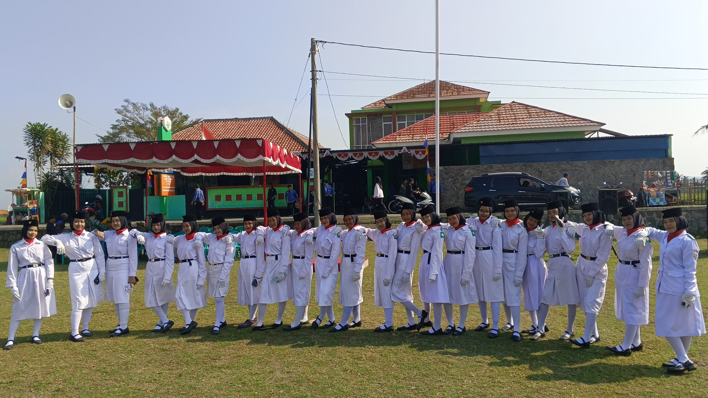

Mewujudkan Generasi Unggul dan Berakhlak Mulia
SMK Al-Ma'arif Memiliki Jurusan

Rekayasa Perangkat Lunak

Akuntansi dan Keuangan Lembaga

Teknik Sepeda Motor
Kegiatan untuk mengasah bakat, disiplin, dan kreativitas siswa
Melatih seni musik Islami dengan rebana dan vokal.

Mendidik kedisiplinan, kepemimpinan, dan semangat kebangsaan.
Menyalurkan hobi olahraga, membangun kerja sama tim.
Melatih keterampilan musik, kekompakan, dan kedisiplinan.
Membangun jiwa kepemimpinan, solidaritas, dan cinta alam.
Temukan lokasi SMK Al-Ma'arif Bumiayu di Google Maps